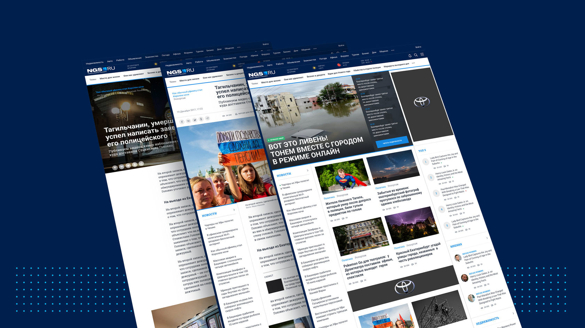

Дизайнер и арт-директор. Руководитель отдела дизайна в Сети городских порталов Hearst Shkulev Digital.
Дизайнер и арт-директор. Руководитель отдела дизайна в Сети городских порталов Hearst Shkulev Digital.
2017 – настоящее время
Роль: руководитель отдела дизайна.
Возглавляю команду дизайнеров из девяти человек, которые работают в четырех городах России.
Приводим к единому дизайну 15 региональных медиа, входящих в сеть. Выстраиваем единую дизайн-систему. Делаем инфографику, графику для соцсетей и оформление мероприятий.
Роль: арт-директор и дизайнер
Продажа и аренда недвижимости
Роль: арт-директор и дизайнер
Вакансии и резюме в России
Интерактивная карта развития электростанций и теплосетей Москвы до 2030 года
Интерактивная карта истории цен в Москве для крупнейшего сервиса о недвижимости (вошла в книгу Cartographics: Designing The Modern Map)
Визуализация полетов в крупнейших аэропортах и во всем мире
Личный картографический проект (премия Data Journalism Awards в 2012 году)
{kind=link}